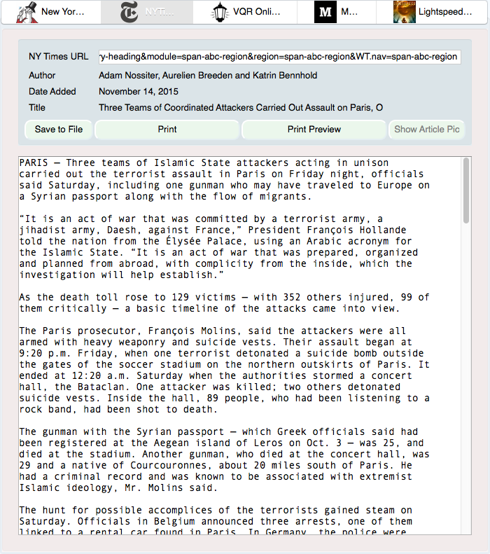
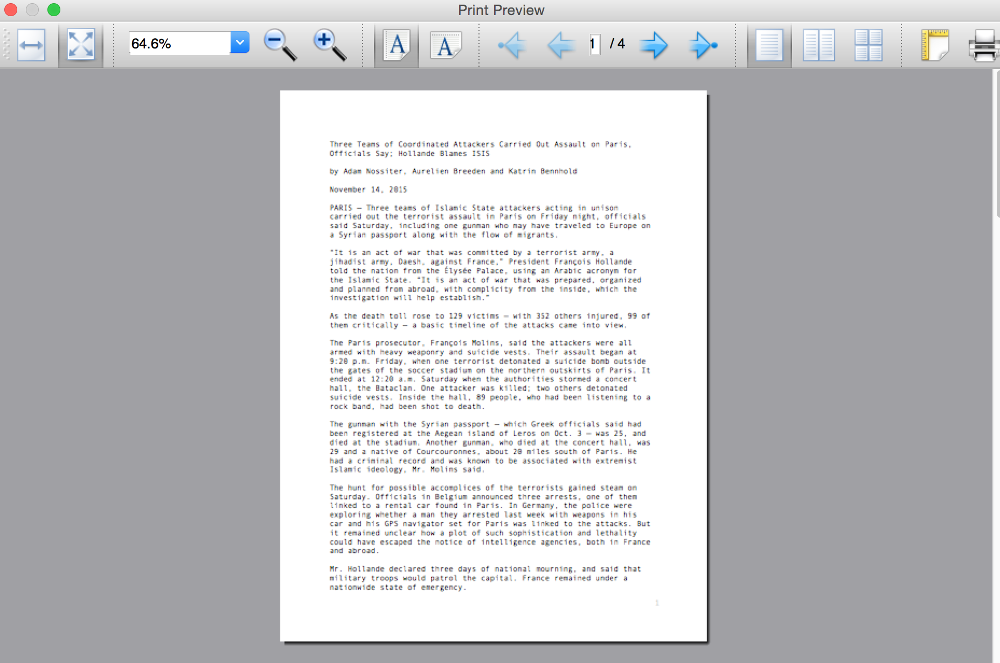
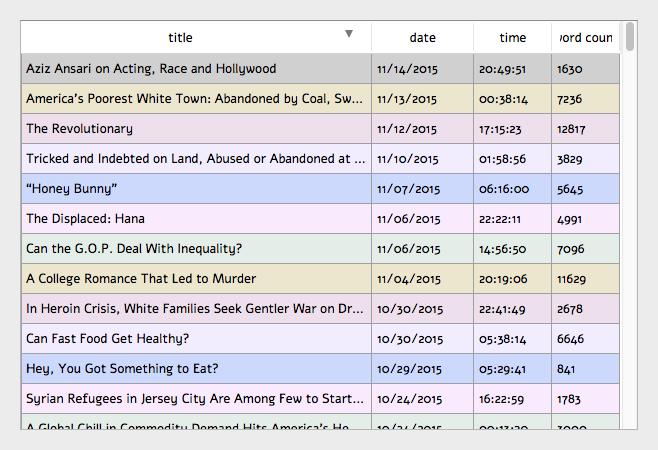
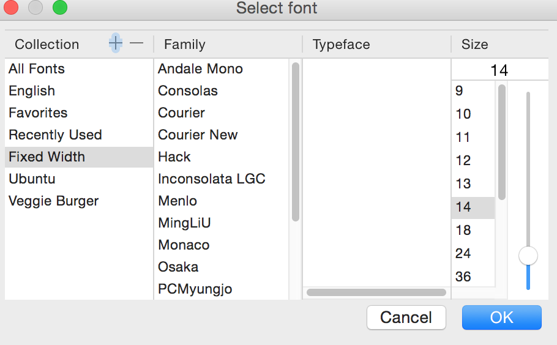

I like NPR, so I made some scripts to download my favorite programs from NPR. This package started off as a way to download Fresh Air, Wait Wait…Don’t Tell Me, and This American Life episodes without resorting to podcasts. This package can probably, straightforwardly be extended to other NPR and PRI programs.
Although this project started off as a way to download these three programs, I have expanded it to include a grab bag of altogether different types of functionalities. Some of these include some image manipulation programs, song manipulation programs, and graphical stuff.
I organize this document into the following sections: Core Functionality, New Functionality, Graphics Functionality (in folders
gui and gui2), and a small section called Oldstuff.
This document was initially converted from a LaTeX source using Pandoc, via
pandoc -s README.tex -o README.md
But eventually this document took on a life of its own.
This consists of functionality to grab episodes from Fresh Air, Wait Wait…Don’t Tell Me, and This American Life. These consist of the following pieces of python code:
npr_utils.py contains common utilities to get the
proper metadata for NPR programs, to name these media files in the
proper date format, and to get the full paths to the
LibAV/FFMPEG and
HandBrakeCLI tools to create the NPR
programs in m4a and mp3 formats (among other functionalities).
These four files handle NPR Fresh Air downloads:
freshair.py, freshair_crontab.py,
freshair_fix_crontab.py, and
freshair_by_year.py.
freshair.py is the main executable that downloads
NPR Fresh Air episodes, converts them to m4a format, and then
applies correct metadata. The help screen for this command line
tool is here,
Usage: freshair.py [options] Options: -h, --help show this help message and exit. --dirname=DIRNAME Name of the directory to store the file. Default is /mnt/media/freshair. --date=DATE The date, in the form of "January 1, 2014." The default is todays date, November 14, 2015. --debug If chosen, run freshair.py in debug mode. Useful for debugging :)
freshair_crontab.py downloads an NPR Fresh Air
episode on a given weekday. It should be called by a cron job
that should be run every weekday.
freshair_fix_crontab.py tries to re-download NPR
Fresh Air episodes that may be incomplete – defined as shorter
than 30 minutes – and which are 90 days or older. This
executable searches through the library of all NPR Fresh Air
episodes, and tries to re-download older, possibly
incomplete episodes.
freshair_by_year.py downloads all the NPR Fresh
Air episodes in a given year.
These four files handle NPR Wait Wait downloads:
waitwait.py, waitwait_realmedia.py,
waitwait_crontab.py, and
waitwait_by_year.py.
waitwait.py is the main executable that downloads NPR Wait Wait episodes, converts them to m4a format, and then applies correct metadata. waitwait_realmedia.py is a python module that allows one to download NPR Wait Wait episodes older than 2004, which are in RealMedia format. The help screen for this command line tool is here,Usage: waitwait.py [options] Options: -h, --help show this help message and exit. --dirname=DIRNAME Name of the directory to store the file. Default is /mnt/media/waitwait. --date=DATE The date, in the form of "January 1, 2014." The default is last Saturday, November 14, 2015. --debugonly If chosen, download the NPR XML data sheet for this Wait Wait episode.
waitwait_crontab.py downloads an NPR Wait Wait episode on a given Saturday. It should be called by a cron job that should be run every Saturday.
waitwait_by_year.py downloads all the NPR Wait Wait episodes in a given year.
thisamericanlife.py manually downloads a given episode number of This American Life. This executable uses a custom online archive for older This American Life episodes that used to be described here (it no longer exists). The help screen for this command line tool is here,
Usage: thisamericanlife.py [options] Options: -h, --help show this help message and exit. --episode=EPISODE Episode number of This American Life to download. Default is 150. --directory=DIRECTORY Directory into which to download This American Life episodes. Default is /mnt/media/thisamericanlife. --extra=EXTRASTUFF If defined, some extra stuff in the URL to get a This American Life episode. --noverify If chosen, then do not verify the SSL connection. --debug If chosen, just download the TAL episode into a file into the specified directory.
This consists of newer functionality that does not download NPR episodes, nor can one straightforwardly modify them to download NPR episodes. These consist of the following pieces of python code.
autoCropImage.py automatically crops image (png,
jpeg, tiff, pdf, etc.) files to remove whitespace. The default whitespace
color is white. The help screen for this command line
tool is here,
Usage: autoCropImage.py [options] Options: -h, --help show this help message and exit --input=INPUT Name of the input file. --output=OUTPUT Name of the output file. Optional. --color=COLOR Name of the color over which to autocrop. Default is white.
convertImage.py uses the CloudConvert REST
API to smoothly and without pain points convert and resize SVG images to PNG images of the same base name. The help screen for this command line tool is here,
Usage: convertImage.py [options] Options: -h, --help show this help message and exit --filename=FILENAME Name of the input SVG file. --width=WIDTH If defined, new width of the file. Optional
changedates.py changes the creation date of JPG and
MOV files, that my Canon digital camera creates, by up and down
one year. I created this tool because my Canon digital camera does
not set the right year on the creation date for image files
it creates. This caused problems when I uploaded those images to
Google Picasa or
Google+. The help screen for this
command line tool is here,
Usage: changedates.py [options] Options: -h, --help show this help message and exit --dirname=DIRNAME Name of the directory to look for jpeg files. --movs If chosen, process MOV files instead. --minus If chosen, subtract a year from the files.
music_to_m4a.py can convert a single file from
mp3/ogg/flac format to m4a format while preserving music file
metadata, and can optionally set the total number of album tracks
and the album cover if the music files is in an album. It can also
rename an m4a music file into the format “artist name - song
name.m4a.” The help screen for this command line tool is here,
Usage: music_to_m4a.py [options] Options: -h, --help show this help message and exit --inputfile=INPUTFILE Name of the input audio file to convert. --outfile=OUTFILE Optional name of the output file. --tottracks=TOTTRACKS Optional total number of tracks in album of which song is a part. --albumloc=ALBUMLOC Optional path to location of the album cover image file. Must be in JPEG or PNG. --quiet If chosen, then verbosely print output of processing. --rename If chosen, simply rename the m4a file to the form <artist>.<song title>.m4a
download_surahs.py downloads recorded surahs
(Abdur-Rashid Sufi) to a
directory of your choice. The help screen for this command line tool
is here,
Usage: download_surahs.py [options] Options: -h, --help show this help message and exit --outdir=OUTDIR Directory to put this data into. Default is /mnt/software/sources/pythonics/nprstuff.
display.py displays an image (SVG, PNG, JPEG, GIF) using the default image viewer for your operating system (Preview for Mac OS X, ImageMagick for Linux, etc.) Its command is simple,
display.py <imagefile>.
imageFromURL.py saves PNG images from an URL to disk. The help
screen for this command line tool is here,
Usage: imageFromURL.py [options] Options: -h, --help show this help message and exit --url=URL URL where the image is located. --filename=FILENAME The name of the PNG file to save the online image. The image name must end in .png. The default name is default.png.
This section describes the two graphical tools I have developed:
gui matches a small subset of functionality that the
Readability tool handles excellently;
gui2 is a
PyQt4 GUI
front-end to the Readability API.
UPDATE: if any of you have gone to the Readability website, you may have realized that Readability has been defunct for over 3 years now.
This GUI can read from the following media websites: Lightspeed Magazine, Medium, The New Yorker, The New York Times, and the Virginia Quarterly Review. Here is a screenshot!
|  |
| screenshot of the GUI reader, converting the URL for the The New York Times into text. Note the separate icons above for the five media websites from which this GUI can read. |
The screenshots of the save file dialog and the print preview dialog are shown here.
|
 |
| The GUI screenshot of the save dialog. | The GUI screenshot of the print preview dialog. |
Note, here I do not support or maintain this tool after I found out about Readability.
This is the PyQt4 GUI front-end to Readability.
|  |  |
The list form of the article’s content, with working dialogs for Font and Print Preview. |
The text form of the article’s content, with working dialogs for Font and Print Preview. |
A screen shot of the font changing dialog, the Font button, and a screenshot of the print preview dialog, the Print button, are shown below.
|  |  |
The Font button dialog. |
The print preview dialog launched by the Print button in the article text widget. |
In the future, I plan on at least implementing the following, all using the Readability API.
EPUB button, to create the article in
EPUB format.
Adding and deleting articles through the article list widget.
These are tools that I do not maintain, located in the oldstuff folder, but which others may find useful. These are pieces of code that I have started, but which are unmaintained. These are the following pieces of code: freshair.sh, waitwait.sh, and google_pull_contacts.py.